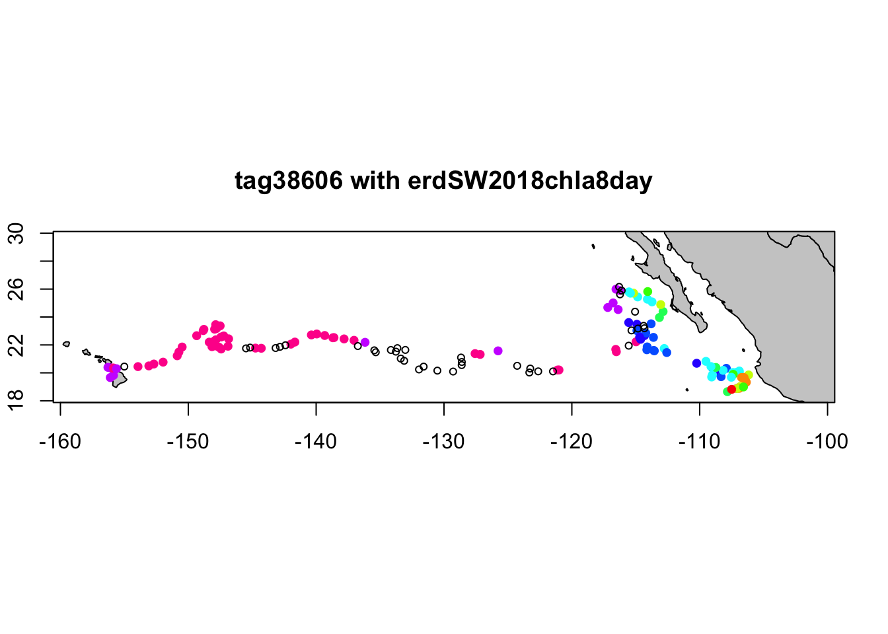

Chapter 3 Matchups to ship or animal tracks
notebook filename | 03-xyt_matchup.Rmd
history | converted to R notebook from xyt_matchup.R
This exercise you will map a track, like that produced by the following the position of an animal, ship, or glider, using longitude, latitude, and time coordinates.
The exercise demonstrates the following techniques:
- Using the rxtracto function to extract satellite data along a track
- Using rerddap to retrieve information about a dataset from ERDDAP
- Using plotTrack to plot the satellite data onto a map as well as to make an animation
- Loading data from a tab separated file
- Plotting the satellite data onto a map
This data is taken from the ERDDAP server at http://coastwatch.pfeg.noaa.gov/erddap/
3.1 Install required packages and load libraries
# Function to check if pkgs are installed, and install any missing pkgs
pkgTest <- function(x)
{
if (!require(x,character.only = TRUE))
{
install.packages(x,dep=TRUE)
if(!require(x,character.only = TRUE)) stop(x, " :Package not found")
}
}
# create list of required packages
list.of.packages <- c("ncdf4", "parsedate","rerddap","plotdap","sp","rerddapXtracto",
"graphics", "maps", "mapdata","RColorBrewer","ggplot2",
"cmocean","gifski","png")
# create list of installed packages
pkges = installed.packages()[,"Package"]
# Install and load all required pkgs
for (pk in list.of.packages) {
pkgTest(pk)
}3.2 Get XYZ coordinates
In this exercise we will the “Marlintag38606” dataset, which is included in the “rerddapXtracto” package. The “Marlintag38606” dataset contains the XYT (longitude, latitude, time) coordinates of a tagged marlin in the Pacific Ocean (courtesy of Dr. Mike Musyl of the Pelagic Research Group LLC).
The “Marlintag38606” file has this structure:
## 'data.frame': 152 obs. of 7 variables:
## $ date : Date, format: "2003-04-23" "2003-04-24" ...
## $ lon : num 204 204 204 204 204 ...
## $ lat : num 19.7 19.8 20.4 20.3 20.3 ...
## $ lowLon: num 204 204 204 204 204 ...
## $ higLon: num 204 204 204 204 204 ...
## $ lowLat: num 19.7 18.8 18.8 18.9 18.9 ...
## $ higLat: num 19.7 20.9 21.9 21.7 21.7 ...We will use the “lon”, “lat” and “date” variables to get the matching satellite data. Here the time variable is already in a date format. Often when reading in your own data you will have to convert the date into a date format (if formating the date remember R syntax is Y for a 4 digit year and y for a 2 digit year)
3.3 Select the dataset and download its metadata
For this example use the SeaWiFS 8-day composite chlorophyll dataset (ID erdSW2018chla8day)
The script below:
- Gathers information about the dataset (metadata) using rerddap
- Displays the information
Set the following arguments for rerddap
Set the dataset ID: dataset <- ‘erdSW2018chla8day’
The default source ERDDAP for rerddap is “https://upwell.pfeg.noaa.gov/erddap”. Since we are pulling the data from the ERDDAP at “http://coastwatch.pfeg.noaa.gov/erddap/”, change the url to url = “http://coastwatch.pfeg.noaa.gov/erddap/”
dataset <- 'erdSW2018chla8day'
# Use rerddap to get dataset metadata
# if you encouter an error reading the nc file clear the rerrdap cache:
rerddap::cache_delete_all(force = TRUE)
dataInfo <- rerddap::info(dataset, url= "https://coastwatch.pfeg.noaa.gov/erddap/")
# Display the metadata
dataInfo## <ERDDAP info> erdSW2018chla8day
## Base URL: https://coastwatch.pfeg.noaa.gov/erddap/
## Dimensions (range):
## time: (1997-09-02T00:00:00Z, 2010-12-15T00:00:00Z)
## latitude: (-89.95834, 89.95834)
## longitude: (-179.9583, 179.9584)
## Variables:
## chlorophyll:
## Units: mg m^-33.4 Extract the satellite data
Double check dataInfo to make sure the dataset covers the time, longitude, and latitude ranges in your XYT data.
Use the name of the chlorophyll parameter that was displayed above in dataInfo: parameter <- “chlorophyll”
Use the xcoord, ycoord, and tcoord vectors you extracted from the marlin tag file.
Some datasets have an altitude dimension. If so, then zcoord must be included in the rxtracto call. The “erdSW2018chla8day” dataset does not include an altitude dimension.
Define the search “radius” for the gridded data. The rxtracto function allow you to set the size of the box used to collect data around the track points using the xlen and ylen arguments. The values for xlen and ylen are in degrees. For our example use 0.2 degrees for both arguments. Note: You can also submit vectors for xlen and ylen, as long as the arethe same length as xcoord, ycoord, and tcoord
Run the rxtracto function to extract the data from ERDDAP.
parameter <- 'chlorophyll'
xlen <- 0.2
ylen <- 0.2
# Some datasets have an altitude dimension. If so, then zcood must be included in the rxtracto call.
# If the dataInfo shows an altitude dimension, uncomment "zcoord <- 0" and include tcoord=tcoord in the rxtracto call.
# zcoord <- 0.
swchl <- rxtracto(dataInfo,
parameter=parameter,
xcoord=xcoord, ycoord=ycoord,
tcoord=tcoord, xlen=xlen, ylen=ylen)## Registered S3 method overwritten by 'httr':
## method from
## print.cache_info hoardrAfter the extraction is complete, “swchl” will contain the following columns.
## List of 13
## $ mean chlorophyll : num [1:152] 0.0709 0.0729 0.081 0.0826 0.0656 ...
## $ stdev chlorophyll : num [1:152] 0.0139 0.00192 0.0055 0.00491 0.0026 ...
## $ n : int [1:152] 4 2 12 5 8 9 4 3 0 7 ...
## $ satellite date : chr [1:152] "2003-04-19T00:00:00Z" "2003-04-27T00:00:00Z" "2003-04-27T00:00:00Z" "2003-04-27T00:00:00Z" ...
## $ requested lon min : num [1:152] -156 -156 -156 -156 -156 ...
## $ requested lon max : num [1:152] -156 -156 -156 -156 -156 ...
## $ requested lat min : num [1:152] 19.6 19.7 20.3 20.2 20.2 ...
## $ requested lat max : num [1:152] 19.8 19.9 20.5 20.4 20.4 ...
## $ requested z min : logi [1:152] NA NA NA NA NA NA ...
## $ requested z max : logi [1:152] NA NA NA NA NA NA ...
## $ requested date : chr [1:152] "2003-04-23" "2003-04-24" "2003-04-30" "2003-05-01" ...
## $ median chlorophyll: num [1:152] 0.0702 0.0729 0.0828 0.085 0.0658 ...
## $ mad chlorophyll : num [1:152] 0.01517 0.00202 0.00564 0.00407 0.00243 ...
## - attr(*, "row.names")= chr [1:152] "1" "2" "3" "4" ...
## - attr(*, "class")= chr [1:2] "list" "rxtractoTrack"3.5 Plotting the results
Two different ways of plotting the data are demonstrate below:
(1) using the “plotTrack” function in rerddapXtracto, which is designed specifically to plot the results from “rxtracto”.
(2) using ggplot, which allows customization of the plots
3.5.1 Using plotTrack
This example uses a color palette specifically designed for chlorophyll.
# Uncomment the png line and the dev.off() line to save the image
# png(file="xyt_matchup.png")
plotTrack(swchl, xcoord, ycoord, tcoord, plotColor = 'algae')
Animating the track
To make a cumulative animation of the track:
3.5.2 Using ggplot.
Put the data into a dataframe for use with ggplot. Subtract 360 from the longitude values to get them ontp values expressed from -180 to 180.
Set up the limits for the bounding box
The bounding box limits should be larger then the minimum and maximum values of xcoord and ycoord
Get the coastline data for the region
If its a big area, use world, rather than worldHires
Map the data
ggplot(swchl.df,aes(x,y)) +
geom_point(aes(color=chl)) +
geom_polygon(data = coast, aes(x=long, y = lat, group = group), fill = "grey80") +
theme_bw(base_size = 15) + ylab("Latitude") + xlab("Longitude") +
coord_fixed(1.3,xlim=xlim,ylim=ylim,expand = c(0, 0)) +
scale_color_gradientn(colours = brewer.pal(n = 9, name = "Greens"), oob=scales::squish,
limits=c(0,.2), na.value="gray") 
Try this on your own This match up was done using weekly (8-day) data. Try rerunning the example using the daily (erdSW2018chla1day) or the monthly (erdSW2018chlamday) satellite data product and see how the results differ.
3.6 Crossing the Dateline
In July 2019 version 0.4.1 of “reddapXtracto”" was updated allowing “rxtracto”" to work on data that crosses the dateline. In this example we will extract chlorophyll data for a grid of stations along the Aleutian Islands.
Create an station array
For crossing the dateline the longitudes for that animal/ship track must be in 0-360 format.
* Create a grid of stations from 172E to 170W (190°) and 50-54N, spced every 2°.
* Then, set up vectors with these values, and then make arrays of the station longitudes and latitudes
lat <- seq(50,54,2)
lon <- seq(172,190,2)
stax <- matrix(lon,nrow=length(lat),ncol=length(lon),byrow=TRUE)
stay <- matrix(lat,nrow=length(lat),ncol=length(lon),byrow=FALSE)To input values into “rxtracto” the longitudes and latitudes need to be in vector format
Define the search “radius” in the x any y directions, in units of degrees
Create an array of dates. For this exercise we are going to assume all stations were sampled in the same month, so we are going to make all the values the same, but they don’t have to be.
Selects the dataset and parameter for the extraction
In this example the dataset chosen is the monthly NOAA VIIRS chlorophyll data
Look at DataInfo to see if dataset has an altitude dimension.
## <ERDDAP info> nesdisVHNSQchlaMonthly
## Base URL: https://upwell.pfeg.noaa.gov/erddap/
## Dimensions (range):
## time: (2012-01-02T12:00:00Z, 2019-11-01T12:00:00Z)
## altitude: (0.0, 0.0)
## latitude: (-89.75626, 89.75625)
## longitude: (-179.9812, 179.9813)
## Variables:
## chlor_a:
## Units: mg m^-3Since this dataset has an altitude dimension, supply an altitude parameter in the “rxtracto” call
Make the call to match up satellite data with station locations.
chl <- rxtracto(dataInfo,
parameter=parameter,
xcoord=xcoord, ycoord=ycoord, zcoord=zcoord,
tcoord=tcoord, xlen=xlen, ylen=ylen)Next map out the data. Will do this two different ways, using base graphics and using “ggplot”. “plotTrack”, the routine used in the example above, is part of the “rerddapXtracto” package, and is designed to easily plot the output from “rxtracto”, but currently it can not handle crossing the dateline, so it cannot use it for this example.
3.6.1 Make a map using base graphics
First set up the color palette. This will use a yellow-green palette (“speed”) from the cmocean package
Identify stations which have a satellite values
Set-up the layout to have a map and a color bar
Create the base map, and then overlay stations with data, and then overlay empty circles around all statons
ww2 <- map('world', wrap=c(0,360), plot=FALSE, fill=TRUE)
map(ww2, xlim = c(140, 240),ylim=c(45,70), fill=TRUE,col="gray80",lforce="e")
map.axes(las=1)
points(xcoord[gooddata],ycoord[gooddata],col=chlcol, pch=19, cex=.9)
points(xcoord,ycoord, pch=1, cex=.9)
Add the colorbar
par(mar=c(4,.5,5,3))
chlv <- min(chl$'mean chlor_a'[gooddata])+(0:9)*(max(chl$'mean chlor_a'[gooddata])-min(chl$'mean chlor_a'[gooddata]))/10
image(y=chlv,z=t(1:9), col=cols, axes=FALSE, main="Chl", cex.main=.8)
axis(4,mgp=c(0,.5,0),las=1)
3.6.2 Make a map using ggplot graphics
ggplot handles colorbars much easier than base graphics!
Put station lat, long and chl values into a dataframe for passing to ggplot
Get land boundary data in 0-360 units of longitude
Make the map
ggplot(chlsta) +
geom_point(aes(x,y,color=chl)) +
geom_polygon(data = mapWorld, aes(x=long, y = lat, group = group)) +
coord_cartesian(xlim = c(140,240),ylim = c(47,70)) +
scale_color_gradientn(colours=cmocean('speed')(8)) +
labs(x="", y="")
![logo]()